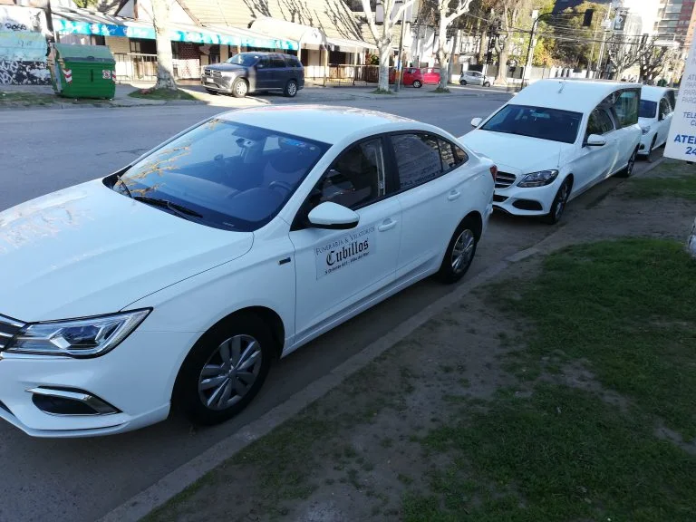

<div class="container" id="traslados">
    <div class="row">
        <div class="col-lg-3">
            <app-service-navigation [redirect]="'/servicios/traslados'"></app-service-navigation>
        </div>
        <div class="col-lg-9 animate__animated animate__fadeIn" id="service">
            <div class="title">
                <h1>Traslados de Carroza</h1>
            </div>
              <p>Disponemos de modernas carrozas panorámicas Mercedes Benz y Cadillac.</p>
              <br>
              <ul>
                  <li>Transporte urna o ánforas en todo el país.</li>
                  <li>Servicio funerario de repatriación.</li>
                  <li>Retiro del cuerpo desde el lugar de fallecimiento: Hospital, Clínica, Domicilio o Servicio Médico Legal hasta el lugar del velatorio donde nos indique la familia.</li>
                  <li>Traslado hacia iglesia o capilla para misa o ceremonia.</li>
                  <li>Traslado hacia cementerio.</li>
                  <li>Vehículo de acompañamiento a disposición de la familia para el día del funeral.</li>
              </ul>
              <br>
              <div class="row">
                  <div class="col-lg-4 col-md-6 col-sm-12">
                      
                  </div>
                  <div class="col-lg-4 col-md-6 col-sm-12">
                      
                  </div>
                  <div class="col-lg-4 col-md-6 col-sm-12">
                      
                  </div>
              </div>
        </div>
    </div>
</div>